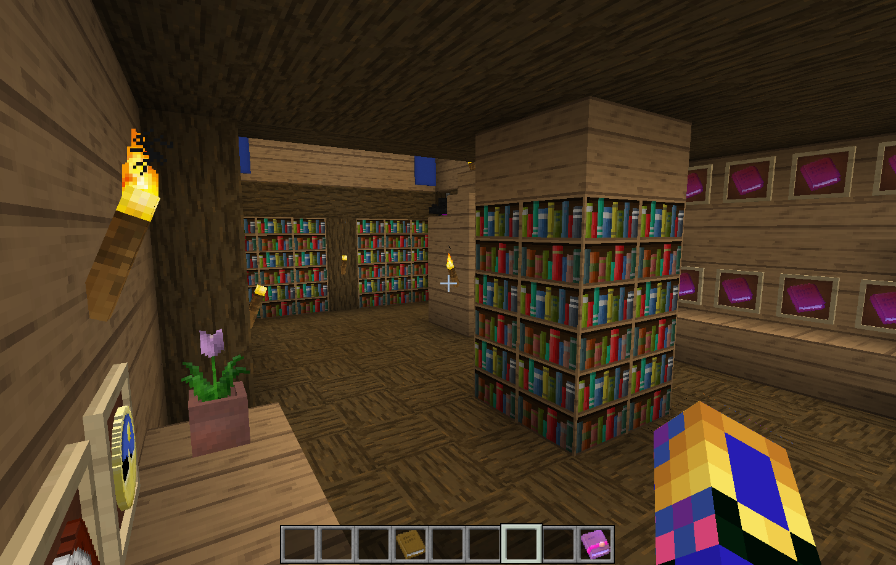

Prismic Edge


Wiki
Posted on July 17, 2016 by JMCNation
The Equestrian Server Wiki is a tool for server players to learn about the different mechanics of this unique survival server. There are many things to learn from reading here and as new features are added more content will also be added to the wiki.
For general Minecraft information you can use the Official Minecraft Wiki for help.
Official Minecraft WikiJMCNation
--------------------------------------------------------------------------------------------------------------------------------------------------------
Equestrian Server Wiki